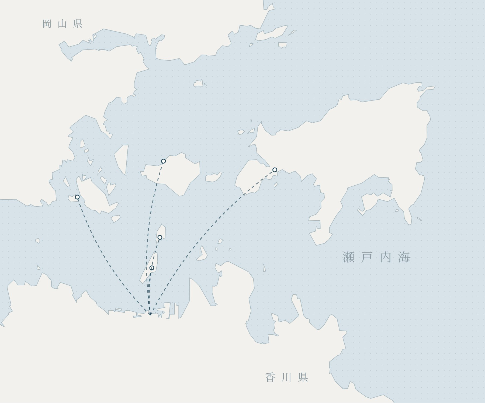

Kagawa specialityKajiyamachi
Honetsukidori Ikkaku, Takamatsu
The best-known house for Kagawa's roast chicken leg. Tender hinadori, or the chewier oyadori.
GOOGLE MAP01 — GETTING HERE
CENTRAL PARK and ATELIER share a building in the centre of Takamatsu. RESORT is on the coast, easiest reached by car.
CENTRAL PARK ・ ATELIER
3-8 Kamei-cho, Takamatsu, Kagawa GOOGLE MAP
RESORT
29-15 Shinkita-cho, Takamatsu, Kagawa GOOGLE MAP
OFFICIAL LINKS
AIR ・ RAIL
BUS
Times and fares are approximate and subject to change. Please check each operator's official site.
02 — EAT
Mostly within walking distance of CENTRAL PARK and ATELIER. From Kagawa's honetsukidori to udon at breakfast and udon late at night. Guests who book receive the same list.
The best-known house for Kagawa's roast chicken leg. Tender hinadori, or the chewier oyadori.
GOOGLE MAPEuropean food, easy and unfussy.
GOOGLE MAPKagawa's fish, in a relaxed izakaya.
GOOGLE MAPGood food at fair prices, nothing formal.
GOOGLE MAPA local favourite for grilled meat and offal.
GOOGLE MAPFrom 8:30 am. Sanuki udon for breakfast on the road.
GOOGLE MAPRecommendations near RESORT are in preparation.
03 — SEE
Takamatsu is the gateway to the islands. From here, the art islands and Kotohira-gu are both day trips.
IN TOWN
In town
An arcade said to be Japan's longest. Shopping and eating as you go.
Steps from CITY
MAPA nationally designated Special Place of Scenic Beauty. A daimyo garden of pines and ponds, best walked in the morning.
About 10 min by car from CITY
MAPThe remains of a rare sea castle, its moat fed by seawater.
About 20 min on foot from CITY
MAPOld port warehouses turned into a lane of cafés and shops.
About 10 min by car from CITY
MAPDAY TRIP
A little further
The site of the Genpei battle. From the plateau, the whole scatter of islands.
About 20–30 min by car
MAPThe sculptor's studio and home. Visits by reservation.
About 30 min by car
Official site and booking"Konpira-san". The main shrine stands at the top of 785 stone steps.
About 1 hour by car
Official siteAt dusk the water mirrors the sky — Japan's answer to the Uyuni salt flat.
About 1 hr 15 min by car
MAPIsland trips and art tours, arranged by the owner.
See EXPERIENCETimes are approximate. Please check ferry and high-speed boat schedules with each operator.
04 — FOUR SEASONS
Whenever you come, there is something you can only see then. Choose a season to see what it offers.
{{season.en}}
{{season.lead}}
In season
{{season.taste}}
Where to stay
{{season.stay}}
Peak times and dates vary by year. Please check official sources before you set out.
05 — ISLANDS
Twenty minutes to an hour by boat from Takamatsu Port. Each island is entirely its own. Choose one on the map to see what's there.

RESORT CENTRAL PARK ・ ATELIER Takamatsu Port{{island.en}}
{{island.tag}}
{{sp.name}}
{{sp.desc}}
{{island.tip}}
The map shows relative positions only. Crossing times are approximate and vary by service and season.
06 — PLACES
For rainy days and family days. Museums, architecture and hot springs within a day of the city. Times are from CENTRAL PARK / ATELIER (CITY).
ART
Museums
Contemporary art and Kagawa craft, with exhibitions and the permanent collection.
About 5 min on foot from CITY
MAPKagawa's history and art in one place, beside the castle ruins.
About 15 min on foot from CITY
MAPDirectly outside JR Marugame Station. The Yoshio Taniguchi building is worth the trip alone.
About 40 min by car / beside JR Marugame Station
MAPA small seaside museum facing the Great Seto Bridge, centred on Higashiyama Kaii's prints.
About 40 min by car
MAPARCHITECTURE
Architecture and history
One of Kenzo Tange's major works, designated an Important Cultural Property in 2022. The lobby is open on weekdays.
About 5 min on foot from CITY
MAPThirty-three old houses brought from across Shikoku to the foot of Yashima, with a gallery by Tadao Ando.
About 25 min by car
MAPThe birthplace of Kukai, with a great five-storey pagoda and wide grounds.
About 50 min by car
MAPA park at the foot of the bridge, where you look straight up at it.
About 40 min by car
MAPRELAX ・ FAMILY
Unwind, with the family
Once you've chosen, we can arrange the car and driver.
About transfers07 — EVENTS
SUMMER ・ CENTRAL PARK
The Sanuki Takamatsu Festival, every August. On festival night the fireworks rise over the harbour, visible from CENTRAL PARK's windows — no crowds, a cold drink in hand.
SPRING ・ KOTOHIRA
Kabuki staged every April at Kanamaruza, built in 1835 and the oldest surviving playhouse in Japan. The lighting is daylight through the shutters; the stage machinery is worked by hand. We help with tickets and the car to Kotohira. Dates for 2027 (the 40th) are yet to be announced.
2028 ・ SETOUCHI TRIENNALE
Once every three years the islands become a museum. The next edition opens on 14 April 2028, running across spring, summer and autumn. Takamatsu Port is the gateway, and you can cross to the islands daily from here.